Как импортировать данные из Google Analytics в Excel с помощью Excellent Analytics

В предыдущих постах из серии «О работе в Excel для специалистов по контекстной рекламе» я рассказывал о дополнении Google Analytics для Google Таблиц и возможностях надстройки Analytics Edge. Безусловно, Edge — очень мощный инструмент, позволяющий избегать сэмплирования данных, выгружать данные с учетом отдельных расширенных сегментов аудитории и так далее. Но любой многофункциональный инструмент требует определенных навыков работы. Интерфейс Analytics Edge для начального уровня пользователей может показаться достаточно сложным. В этой статье я расскажу вам про аналог Analytics Edge. Он намного проще, но так же импортирует всю необходимую для анализа информацию из Google Analytics в Excel. Речь пойдет о надстройке Excellent Analytics.

Чем отличается Excellent Analytics от Analytics Edge?
Разница между сервисами в том, что в Excellent Analytics более удобный и понятный интерфейс, но с лимитом в 10 000 строк, выгружаемых за один запрос. Analytics Edge имеет более сложный интерфейс, но при этом нет ограничения по количеству импортируемых строк. Если результат ваших запросов к данным Google Analytics не превышает этого лимита, вам будет более удобна именно эта надстройка. Минус Excellent Analytics: в отличие от Analytics Edge, в Excellent Analytics нет возможности создавать динамические сегменты. Также в Edge присутствует возможность минимизировать сэмплирование данных, разбив запросы по датам, неделям или месяцам. В Excellent Analytics этой опции нет, но, если посещаемость вашего сайта в месяц не превышает 10 000 — 15 000 тысяч пользователей, то функционала этой надстройки будет достаточно. Я бы посоветовал специалистам по контексту сразу приступить к использованию Analytics Edge. Даже если до сих пор объем запрашиваемых из Google Analytics данных не превышал 10 000 строк, вполне вероятно, что в будущем вы столкнетесь с задачей, где объемы выгружаемых данных будут значительно превышать этот лимит. При этом перестроиться с Excellent Analytics будет уже труднее, поскольку основные параметры (dimenisions) и показатели (metrics) в настройках называются немного иначе.
Как работать с Excellent Analytics?
Сначала скачиваем последнюю версию надстройки с официального сайта разработчика. После установки в Excel появится новая одноименная вкладка Excellent Analytics.
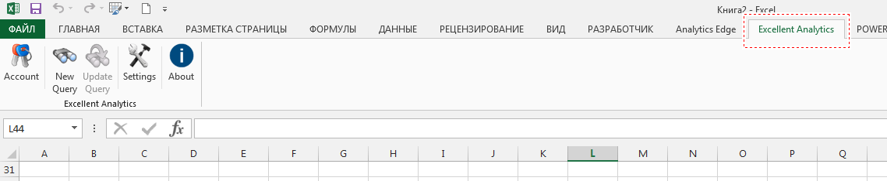
Затем свяжите аккаунт Google Analytics и Excellent Analytics. Для привязки аккаунта нажмите кнопку Account, которая находится на вкладке Excellent Analytics:
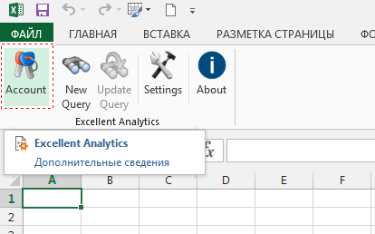
Введите данные для авторизации в аккаунте Google:
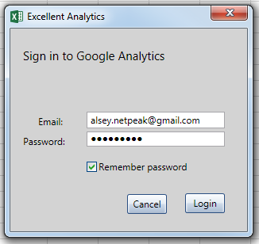
Нажмите на кнопку Login. Далее откроется окно Excellent Analytics, в котором необходимо настроить параметры вашего запроса:
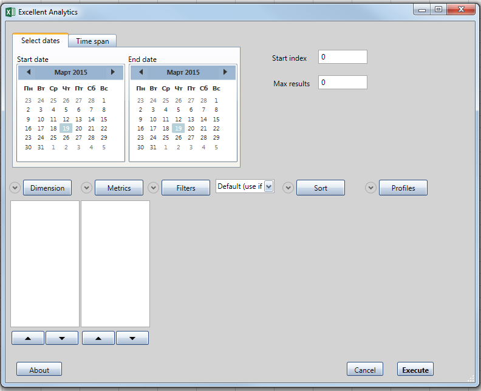
Как настраивать запросы?
Рассмотрим подробно настройки запроса Excellent Analytics. 1. Выбор представления Google Analytics осуществляется после нажатия на Profiles:
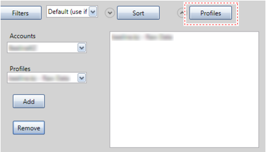
- В выпадающем списке Accounts выберите ресурс Google Analytics. Затем в выпадающем списке Profiles выберите представление Google Analytics, из которого вы планируете импортировать данные в Excel. 3. Нажмите Add для того, чтобы добавить нужное представление в список для возможного выбора данных:
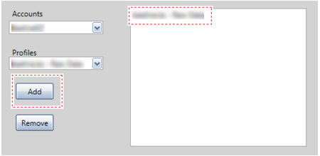
- Выбор отчетного периода осуществляется во вкладках Select dates или Time span. В окне Select dates вы можете указать статическую дату начала (start date) и дату завершения (end date) для выгрузки необходимых данных:
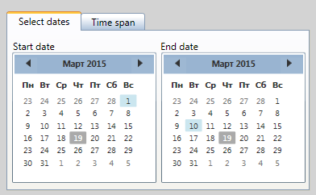
- На вкладке Time span вы можете указать относительный период. Например, сегодня (today), вчера (yesterday), прошлая неделя с понедельника по воскресенье (last week mo — sn), прошлая неделя с воскресенья по субботу (last week sun —sat), прошлый месяц (last month), прошлый квартал (last quarter), прошлый год (last year) и текущий год (this year):
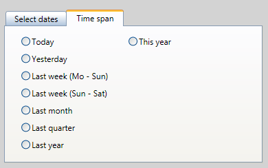
- Выбор параметров (dimensions) осуществляется при нажатии кнопки Dimension:
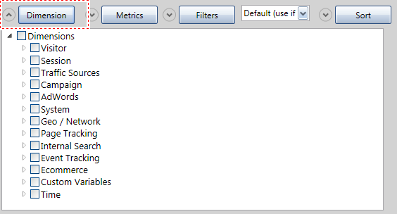
Далее откроется список групп параметров.

Существует ограничение — для одного запроса можно выбрать не более 7 параметров. К тому же, структура базы данных Google Analytics имеет ограничения в выборе различных комбинаций параметров и показателей.
Для предотвращения конфликта между выбранными параметрами и показателями перейдите в справочник параметров (dimensions) и показателей (metrics) Google Analytics и галочками по очереди отмечайте интересующие вас параметры (dimensions) и показатели (metrics).

Например, зайдите в справочник, откройте группу параметров и показателей AdWords и выберите следующие показатели (metrics), ga:impressions (показы объявлений) и ga:adCost (расходы на клики по объявлению). Обратите внимание на параметры (dimension) ga:adFormat (формат объявления) и ga:adTargetingType (тип таргетинга).
Данные параметры выделяются серым цветом и они заблокированы от выбора — это говорит о том, что выбранные метрики не совместимы с данными параметрами:
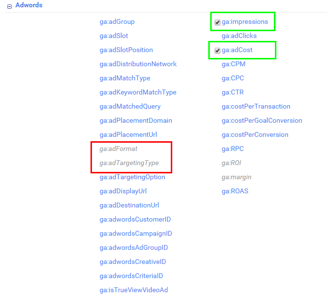
- Выбор показателей (metrics) осуществляется при нажатии на кнопку Metrics:
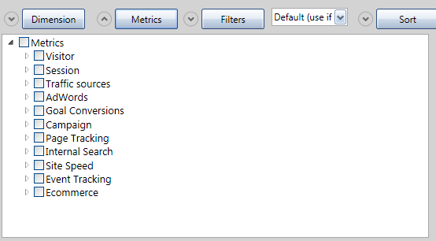
- В открывшемся окне групп показателей выберите нужные показатели, по очереди раскрывая группы.
Существует ограничение на количество показателей для одного запроса: не более 10 показателей.
Так же, как и параметры, комбинации различных показателей могут конфликтовать между собой. Поэтому перед выбором интересующих вас показателей перейдите в справочник параметров (dimensions) и показателей (metrics) Google Analytics и галочками по очереди отмечайте интересующие вас параметры (dimensions) и показатели (metrics). Все не совместимые с выбранными вами поля будут обозначены серым цветом и заблокированы. Например, откройте группу параметров и показателей AdWords в справочнике и выберите следующие показатели (metrics): ga:impressions (показы объявлений) и ga:adCost (расходы на клики по объявлению). Обратите внимание на параметры (dimension) ga:adFormat (формат объявления) и ga:adTargetingType (тип таргетинга). Данные параметры выделяются серым цветом, и они заблокированы от выбора — это говорит о том, что выбранные метрики не совместимы с данными параметрами. 9. Установка необходимых фильтров осуществляется при нажатии кнопки Filters:
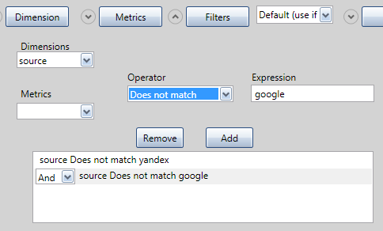
По очереди вы можете задать параметры фильтрации и указать значения для любых показателей и указать между ними логические зависимости и/или (and/or). При выборе фильтра для параметра(dimension) существуют следующие операторы:
- Exact match — точно совпадает (равное);
- Does not match — не совпадает (не равное);
- Contains a match for yhe regular expression — соответствует регулярному выражению;
- Does not match regular expression — не соответствует регулярному выражению;
- Contains substring — содержит;
- Does not contains substring — не содержит.
При выборе фильтра для показателей (metrics) существуют следующие операторы:
- Equals — равно (=);
- Does nor equals — не равно (<>);
- Greater than — больше (>);
- Lesser than — меньше (<);
- Greater then or equal to — больше или равно (>=);
- Less than or equal to — меньше или равно (<=).
Для того, чтобы добавить фильтр, после выбора нужного параметра (dimension) или показателя (metrics), выбора оператора (operators) и введенного значения (expression) необходимо нажать кнопку Add (добавить). Далее повторить все те же операции для всех необходимых для фильтрации параметров и показателей.
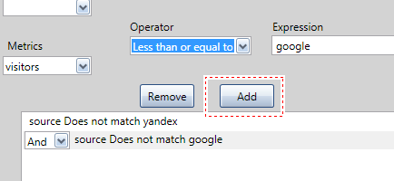
- Для выбора расширенных сегментов воспользуйтесь выпадающим списком, расположенным справа от кнопки Filters.
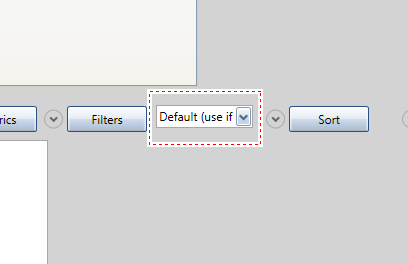
В выпадающем списке содержатся все системные и пользовательские сегменты, которые присутствуют в выбранном представлении Google Analytics. Разница между использованием сегментов и фильтров в надстройках детально описана в статье про Analytics Edge. 11. Настройка сортировки данных возвращенным запросом осуществляется при нажатии кнопки Sort.
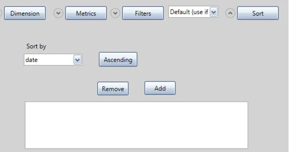
В выпадающем списке Sort by находятся все выбранные ранее параметры и показатели. Выбрав желаемый с помощью переключателя Ascending, установите нужный режим для выбранного поля — по возрастанию (ascending) либо по убыванию (descending). Нажмите кнопку Add для добавления уровня сортировки. Повторите данные шаги для всех полей, необходимых для сортировки данных запроса.
Больше дополнительных настроек
Еще вы можете установить лимит на количество строк в импортируемых данных. Для этого установите значение от 1 до 10 000 в поле Max results. Максимальный лимит по количеству строк для одного запроса при использовании Excellent Analytics — 10 000.
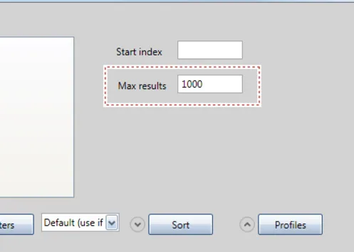
При необходимости также можно указать, с какой строки данных, которые вернул запрос, начать импорт в Excel. Для этой операции укажите в поле Start index количество строк, которое необходимо пропустить.
Например, если вы выгружаете количество сеансов по датам и выбираете период с 1 по 10 марта, укажите в поле Start index значение 5 — в Excel будут импортированы данные с 5 по 10 марта (первые 5 строк, содержащие информацию о количестве сеансов с 1 по 4 марта, будут игнорироваться при импорте данных в Excel).
Нажмите Execute для импорта выбранных данных в Excel. Done! Теперь вы знаете принципы работы двух полезных инструментов для импорта данных из Google Analytics в Excel, а также недостатки и преимущества использования каждого из них. Вам остается только определить наиболее оптимальный и удобный способ импорта информации.
После закрепления на практике знаний об импорте данных стоит освоить их преобразование. Самая удобная фишка для преобразования загруженного массива данных — сводные таблицы. Читайте в деталях, как и зачем использовать сводные таблицы в Google AdWords.
P. S.: Как и в предыдущей статье, в качестве бонуса, а также для облегчения начала работы с описанным в статье инструментом привожу справочник основных параметров и показателей Google Analytics. Справочник основных параметров
| Google Analytics | Excellent Analytics | Справочник API |
|---|---|---|
| Источник | source | ga:source |
| Канал | medium | ga:medium |
| Глубина просмотра | page depth | ga:pageDepth |
| Регион | region | ga:region |
| Город | city | ga:city |
| Длительность сеанса | visit length | ga:sessionDurationBucket |
| Дней с последнего сеанса | day sinece last visit | ga:daysSinceLastSession |
| Тип пользователя | visitor type | ga:userType |
| Тип устройства | — | ga:deviceCategory |
| Число сеансов | visit count | ga:sessionCount |
| Группа объявлений | ad group | ga:adGroup |
| Кампания | campaign | ga:campaign |
| Ключевое слово | keyword | ga:keyword |
| Категория продуктов | product category | ga:productCategory |
| Продукт | product name | ga:productName |
Справочник основных показателей
| Google Analytics | Excellent Analytics | Справочник API |
|---|---|---|
| Сеансы | visits | ga:sessions |
| Отказы | bounces | ga:bounces |
| Длительность сеанса | time on site | ga:sessionDuration |
| Цель:№ (достигнутые переходы к цели№) | goal № completions | ga:goalXXCompletions |
| Достигнутые цели | goal completions all | ga:goalCompletionsAll |
| Пользователи | visitors | ga:users |
| Новые пользователи | new visitors | ga:newUsers |
| Транзакции | transactions | ga:transactions |
| Доход от продукта | item revenue | ga:itemRevenue |
| Показы | impressions | ga:impressions |
| Клики | ad clicks | ga:adClick |
| Стоимость | ad cost | ga:adCost |